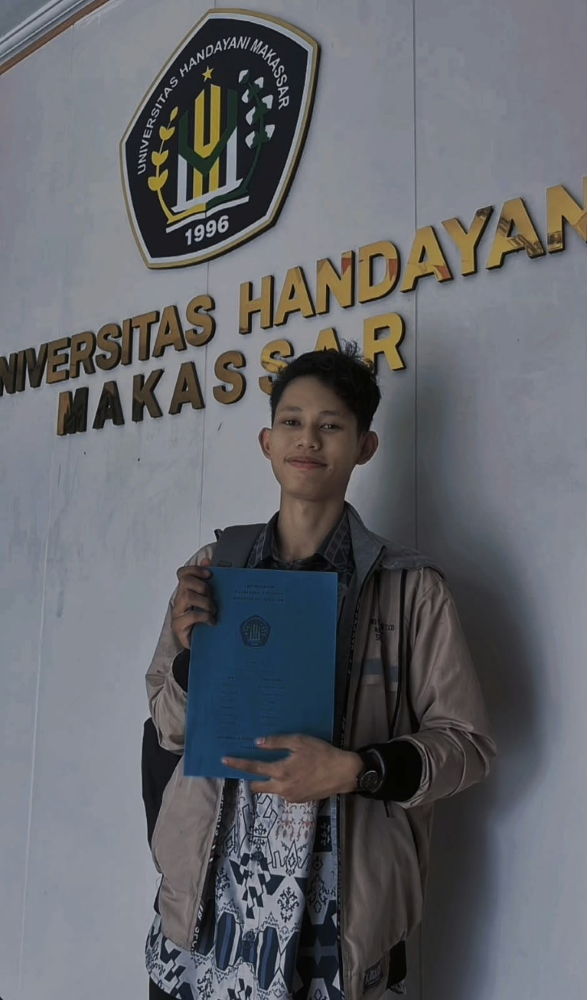

Nama Muahmmad Ihwan Lahir di Sidrap, 22 Maret 2004. Saat ini sedang menempuh pendidikan di Universitas Handayani Makassar

Nama Muhammad Ihwan, lahir di Sidrap pada tanggal 22 Maret 2004. Perjalanan pendidikan dimulai dari TK di Rappang, dilanjutkan menempuh pendidikan dasar hingga tingkat menengah di Pondok Pesantren, dan saat ini aktif berkuliah di Universitas Handayani Makassar sejak tahun 2023. Memiliki pengalaman kepengurusan organisasi baik di lingkungan pesantren maupun kampus.
Pengalaman kepemimpinan, keaktifan, dan peran dalam berbagai organisasi.
Tertarik berdiskusi atau ingin terhubung? Anda dapat menghubungi saya melalui media sosial yang tersedia di bawah ini.